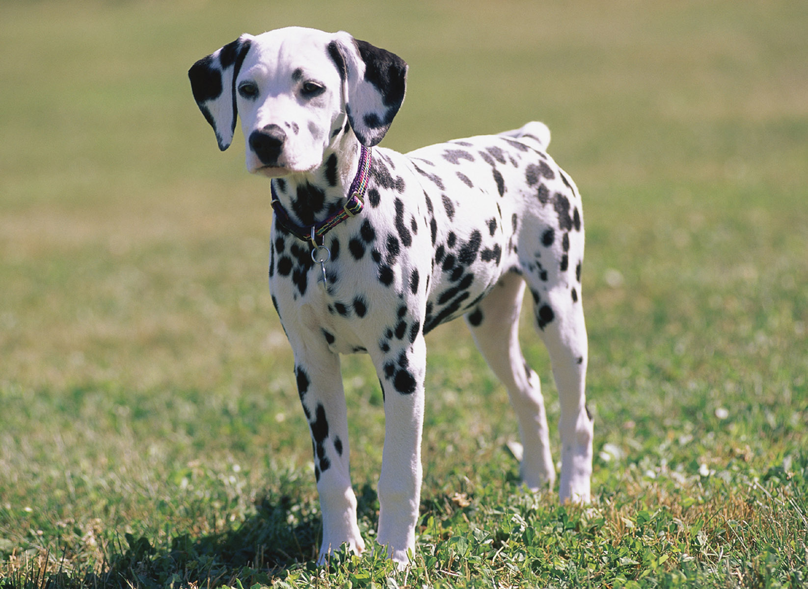
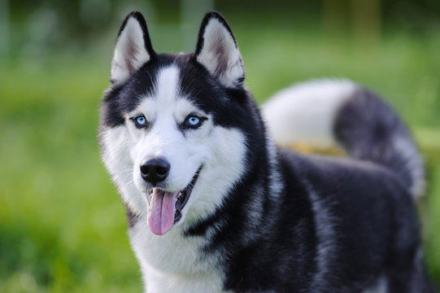
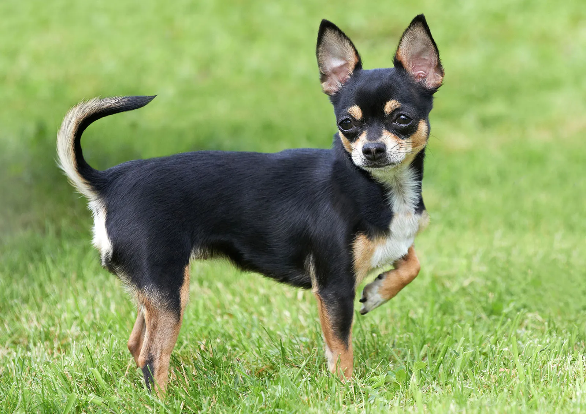
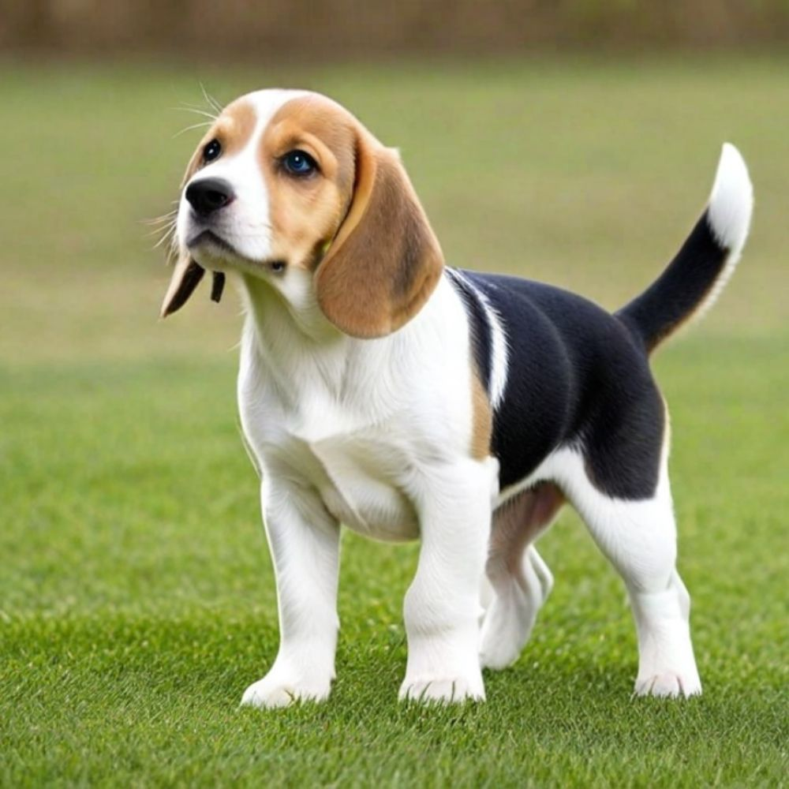
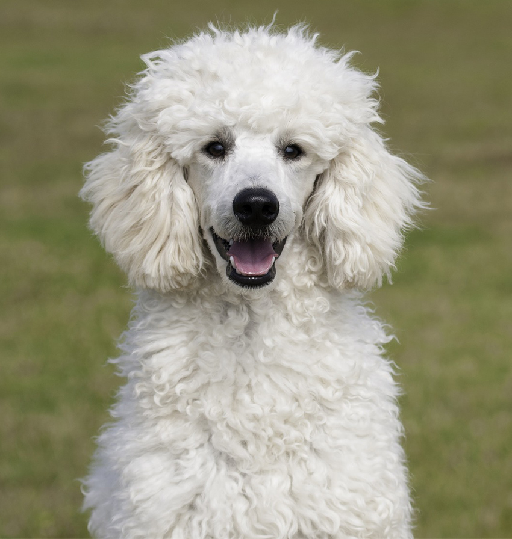
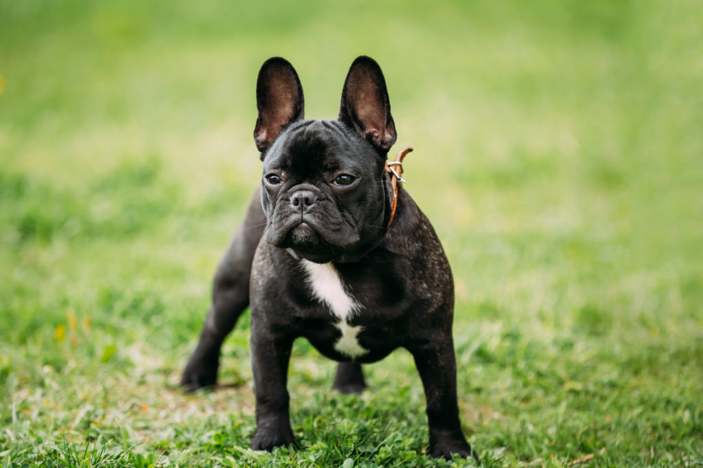

Labrador Retriever
El Labrador es una de las razas más queridas del mundo. Son perros extremadamente cariñosos, inteligentes y sociables. Les encanta jugar, convivir con personas y aprender trucos nuevos. Son ideales para familias y se llevan muy bien con niños.

Pastor Alemán
El Pastor Alemán es fuerte, leal y muy protector. Es una raza conocida por su valentía y capacidad de aprendizaje, lo que lo convierte en un excelente perro de trabajo, guardián y compañero fiel.
Golden Retriever
El Golden es amable, paciente y muy juguetón. Tiene un carácter dulce y equilibrado, lo que lo hace perfecto para convivir con niños y otros animales. Es una raza muy noble y obediente.

Dálmata
Elegante, atlético y con su característico pelaje manchado. El Dálmata es un perro lleno de energía y personalidad, ideal para personas activas y amantes del ejercicio.

Husky Siberiano
El Husky es una raza enérgica y hermosa, conocida por sus ojos llamativos y su espíritu libre. Son perros muy activos que disfrutan correr y explorar. Tienen un carácter amistoso y curioso.

Chihuahua
Aunque es pequeño, el Chihuahua tiene una personalidad enorme. Es valiente, expresivo y muy protector con su dueño. Ideal para quienes buscan un perro pequeño pero lleno de carácter.

Beagle
El Beagle es curioso, amigable y siempre está listo para explorar. Tiene un olfato increíble y un carácter alegre que lo convierte en un excelente compañero para aventuras.
Rottweiler
El Rottweiler es fuerte, seguro y muy leal. Aunque tiene fama de serio, es un perro cariñoso con su familia y muy protector. Con buen entrenamiento, es un compañero excepcional.

Poodle
Elegante, inteligente y fácil de entrenar. El Poodle es una de las razas más versátiles, destacando por su inteligencia y su carácter amable. Es ideal para personas activas.

Shiba Inu
Independiente, limpio y con una personalidad única. El Shiba Inu es conocido por su aspecto adorable y su carácter orgulloso. Es un perro muy inteligente y observador.

Border Collie
Considerado el perro más inteligente del mundo. Es muy activo, trabajador y necesita estimulación mental constante. Perfecto para personas que disfrutan actividades al aire libre.

Bulldog Francés
Pequeño, gracioso y lleno de personalidad. El Bulldog Francés es muy cariñoso y disfruta pasar tiempo con su dueño. Es perfecto para espacios pequeños y tiene un carácter adorable.